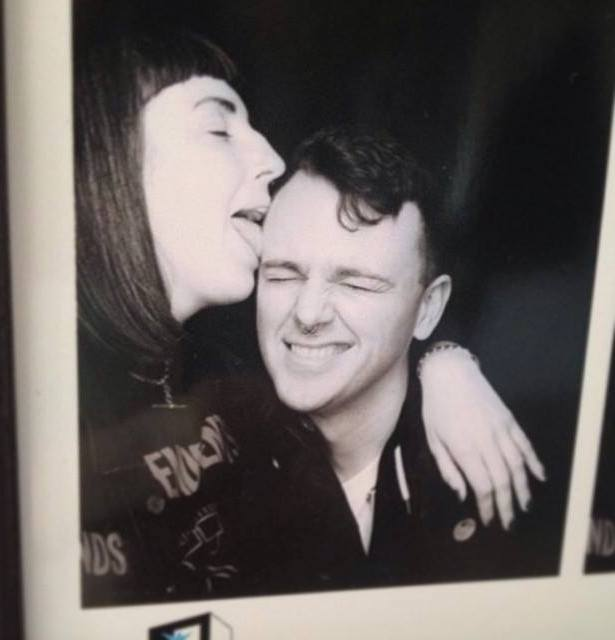
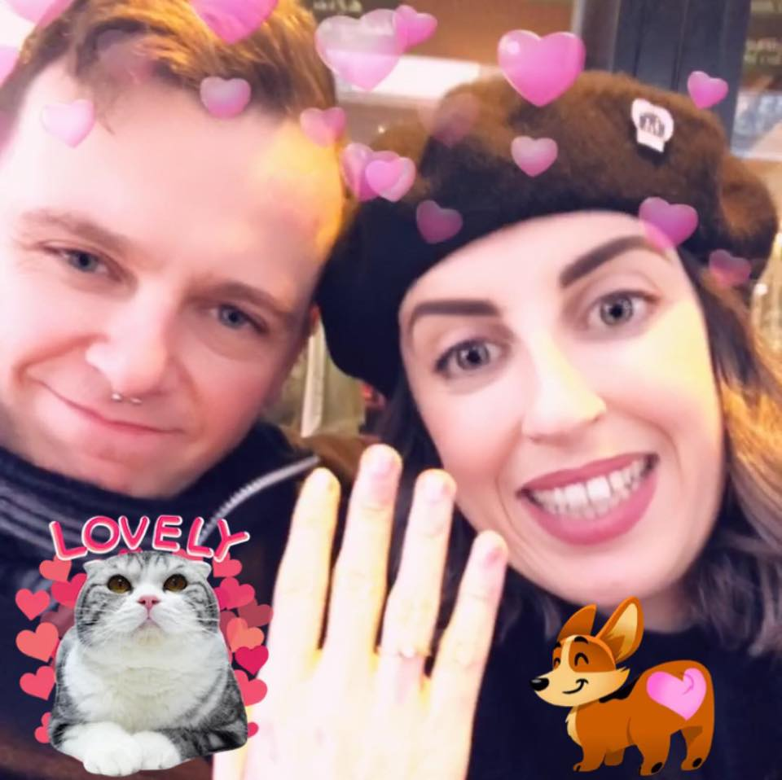
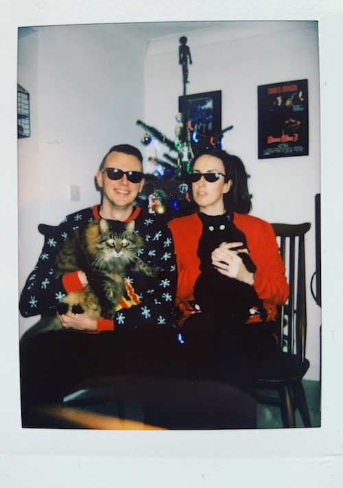

Laura had been living in London for a couple of years in the Summer of 2013 on a trip home she met her friends in Stephen's Green, and they were accompanied by a handsome lad from Cork she did not recognise, but who everybody else seemed to know and love. They immediately hit it off. A few months, and a few thousand facebook messages later, they made it official.
They spent the next two years spending all their money on evil budget airline flights, before Alan made the move to the even bigger smoke.
Fast forward another two years and Alan popped the Big Question in Paris at a lil cafe by the Moulin Rouge called "Le Chat Noir", an ode to his other true love, their cat Babs. They celebrated over a croque moinsieur and Irish coffees.
Laura and Alan still live in London, with Babs and a new addition to the fam, the Prodigal Cat Bill.
Bill and Babs were invited to the wedding, but declined without regrets.
